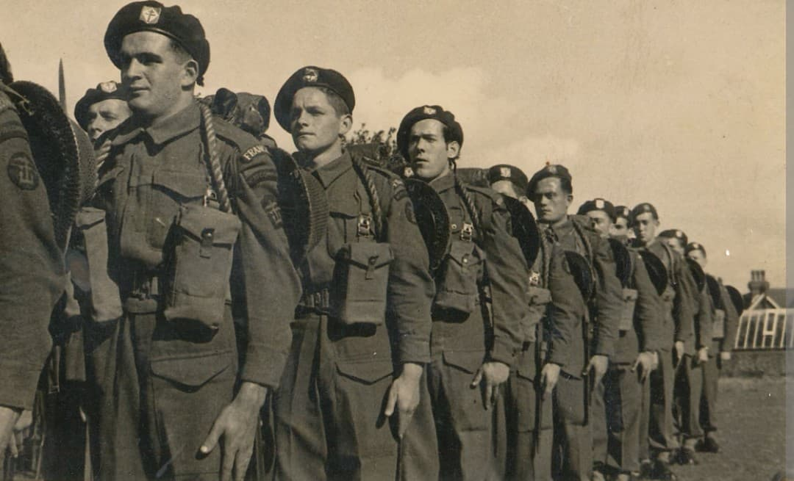
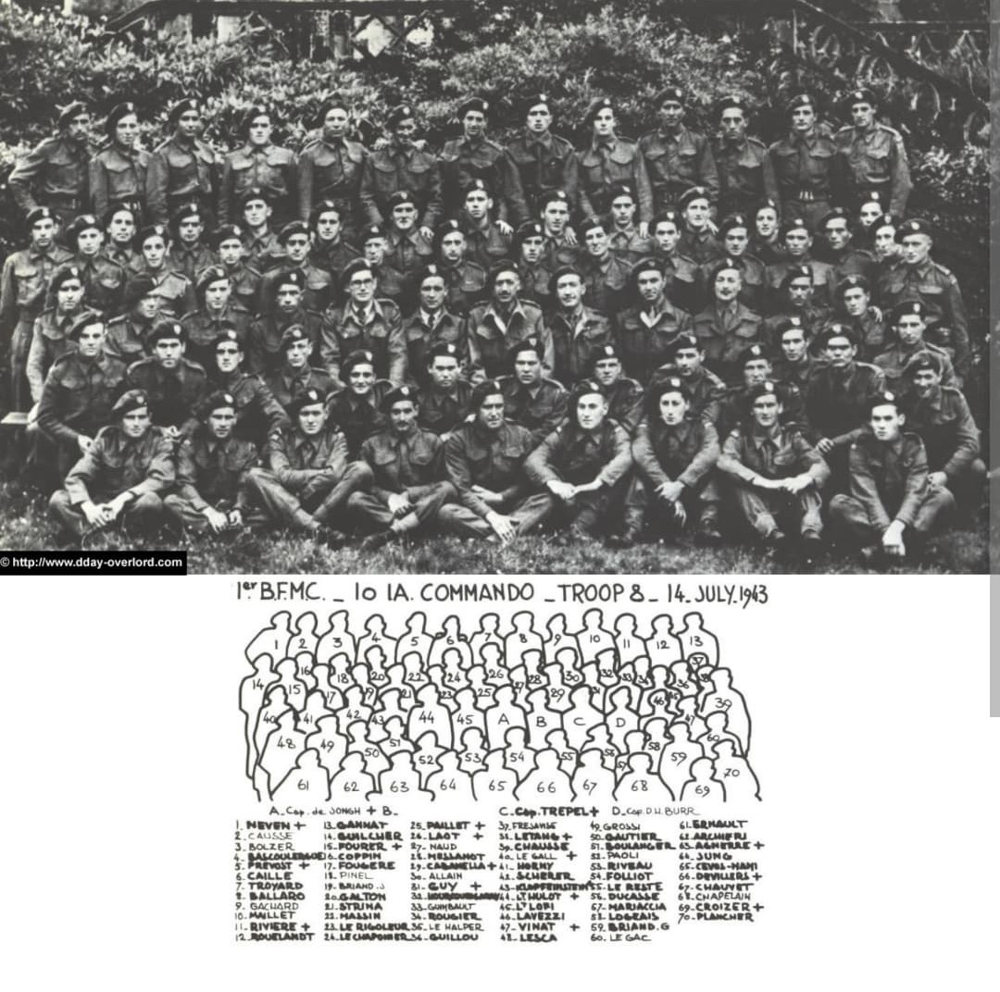
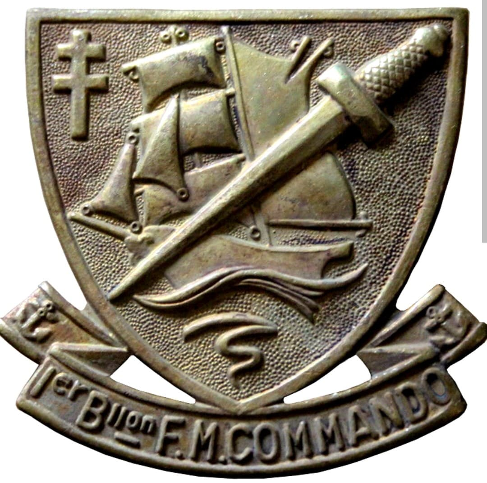
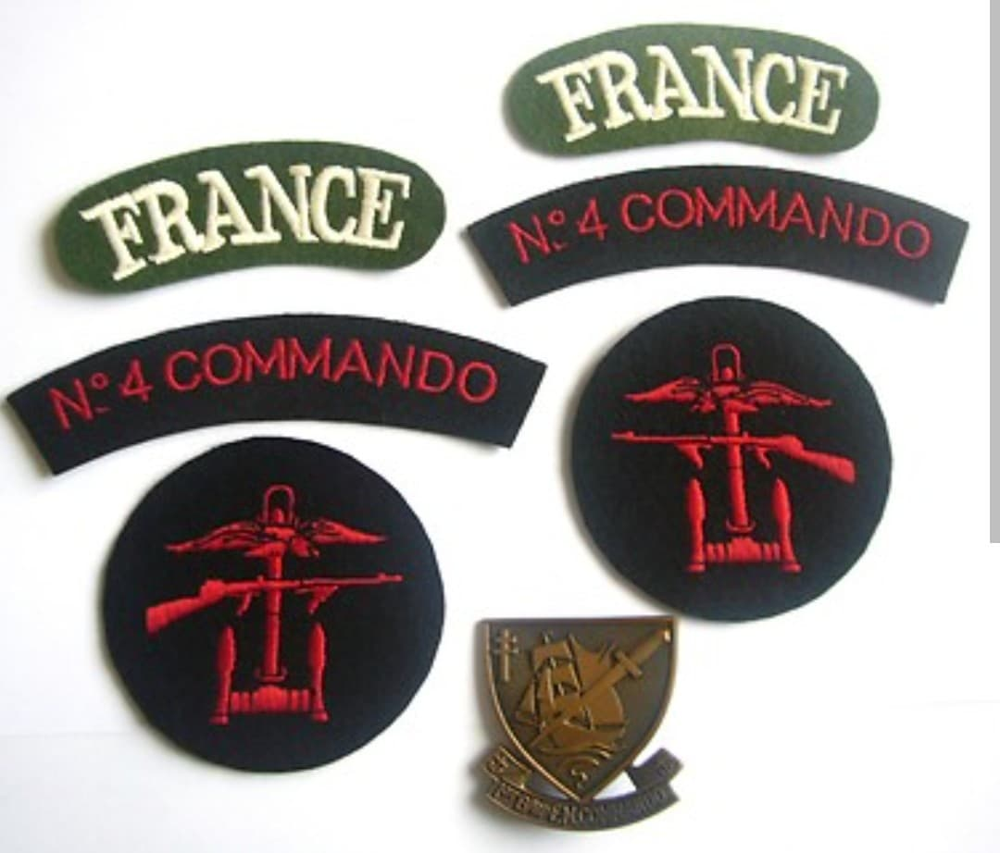
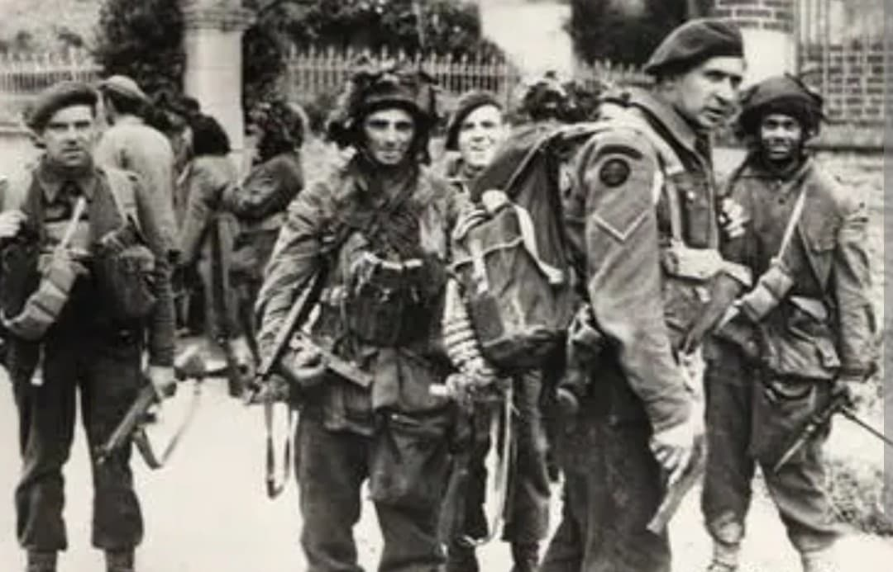

Les 177 Français du D-Day : de l'assaut de Sword Beach à la libération de la Normandie

Créé au printemps 1942 en Grande-Bretagne par le capitaine de corvette Philippe Kieffer, le **1er Bataillon de Fusiliers Marins Commandos (1er BFMC)** rassemble des volontaires de la France Libre devenus l'élite de la Marine Nationale.
Formés à l'entraînement le plus exigeant au centre de Achnacarry en Écosse, ces hommes sont restés célèbres dans l'histoire pour avoir été les seuls Français en uniforme à prendre part au Débarquement de Normandie dès les premières heures du 6 juin 1944.

En raison de leurs effectifs limités, les 177 commandos français de la France Libre étaient trop peu nombreux pour former un commando complet à eux seuls selon les normes et standards de l'armée britannique[span_4](start_span)[span_4](end_span).
Pour combattre efficacement lors de l'invasion de l'Europe, ils ont donc été intégrés directement au sein d'une unité d'élite britannique plus large : le No. 4 Commando[span_5](start_span)[span_5](end_span). Au sein de cet ensemble, les Français étaient organisés en trois entités distinctes[span_6](start_span)[span_6](end_span) :
Intégrés aux unités britanniques, les hommes portaient la tenue d'assaut et le béret vert de commando britannique inclinés à droite[span_10](start_span)[span_10](end_span). Cependant, ils se distinguaient fièrement par l'insigne spécifique du 1er BFMC, dessiné par le commando Guy Vourc'h et porté sur le bras droit ou la poitrine.
Cet insigne symbolique se compose d'un **écu de bronze** chargé de la **Croix de Lorraine** (symbole de la France Libre), surmonté du poignard commando britannique (*Fairbairn-Sykes Dagger*) et du ruban de la Marine Nationale française portant la mention « Premier Bataillon de Fusiliers Marins Commandos ».


Au matin du D-Day, intégrés au *No. 4 Commando* aux côtés de la *1st Special Service Brigade* du Lord Lovat, les hommes de la Troop 1, Troop 8 et du K-Gun débarquent sur la section *La Brèche* de **Sword Beach** (Colleville-Montgomery)[span_11](start_span)[span_11](end_span).
Débarqués en première ligne sous un feu nourri, ils neutralisent rapidement les fortifications côtières avant de foncer à pied vers **Ouistreham** pour prendre d'assaut le fortin du Casino. Malgré plusieurs blessures subies dès le débarquement, le capitaine Kieffer continue de diriger le combat jusqu'à la neutralisation totale du point d'appui allemand.

Après la capture de Ouistreham, le bataillon traverse le canal de l'Orne au niveau du pont de Bénouville (**Pegasus Bridge**) pour renforcer les parachutistes de la *6th Airborne Division*. Ils s'installent ensuite en défense ferme dans le secteur Amfreville-Bavent durant l'été 1944.
En novembre 1944, les commandos français s'illustrent de nouveau lors de l'assaut amphibie sur l'île de **Walcheren** aux Pays-Bas (opération *Infatuate*), sécurisant l'estuaire de l'Escaut pour ouvrir le port d'Anvers aux armées alliées.
Sur les 177 hommes ayant débarqué le 6 juin 1944, seulement 24 ont terminé la campagne de Normandie sans avoir été blessés[span_12](start_span)[span_12](end_span). Le bataillon déplore 21 morts au combat au cours de ses campagnes.
Compagnon de la Libération, le 1er BFMC a légué ses traditions directes à la Marine Nationale : aujourd'hui, la force des **Commandos Marine** (Jaubert, Trepel, de Penfentenyo, de Montfort, Hubert, Kieffer et Ponchardier) perpétue avec fierté l'esprit et la mémoire des hommes du capitaine Kieffer.
Page du Musée HOP WW2 – Section Unités & Divisions Célèbres